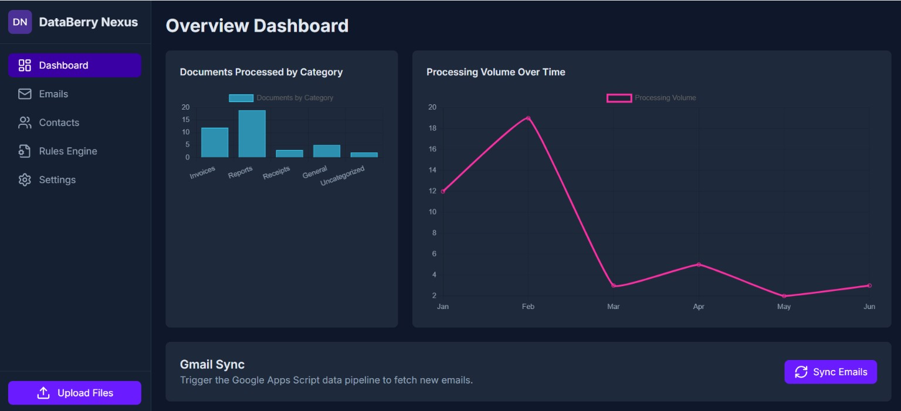

The challenge
Business documents and correspondence arrive through email in varied forms. Organizing them involves classification, document handling, archiving and maintaining related contact information. The goal was to connect these activities in a coherent workflow and establish a foundation for more structured processing of financial information.
Solution architecture
The application combines Google Apps Script server-side logic with a browser-based interface built using HTML, CSS and JavaScript. Gmail provides the email source, Google Drive the document organization layer, and Google Sheets the structured record and contact layer.

Implemented components
- Dedicated Gmail labels distinguish conversations awaiting processing (Nexus/To-Process) from those categorized as processed (Nexus/Processed).
- A structured Drive folder hierarchy separates items to process from processed items, with year- and month-based organization.
- DataBerry Nexus generated PDF documents from email content and archived them in Google Drive. Demonstrated examples include financial documents such as utility invoices and cloud-service billing statements.
- A Google Sheets contact register stores contact-related information such as names or organizations, email addresses and timestamps.
- The application includes interface components for managing records and processing rules, plus CSV export functionality; the integrity and synchronization of all views still require validation.
Human review and future direction
The application incorporates confirmation for selected decisions. Contact-based suggestions for new processing rules, financial-field extraction and additional automation are planned directions rather than completed features.
Development status
Email categorization and human-confirmation components are usable, and automated PDF generation and archiving are demonstrated. The complete sequence from synchronization through document processing, archiving, metadata storage and interface display has not been validated as a reliable end-to-end pipeline. Dashboard figures should not be interpreted as verified operational metrics.
Skills demonstrated
A useful information-management workflow combines structured records with human review where email context can be ambiguous.